Art is not only a creation
but also
national identity
.
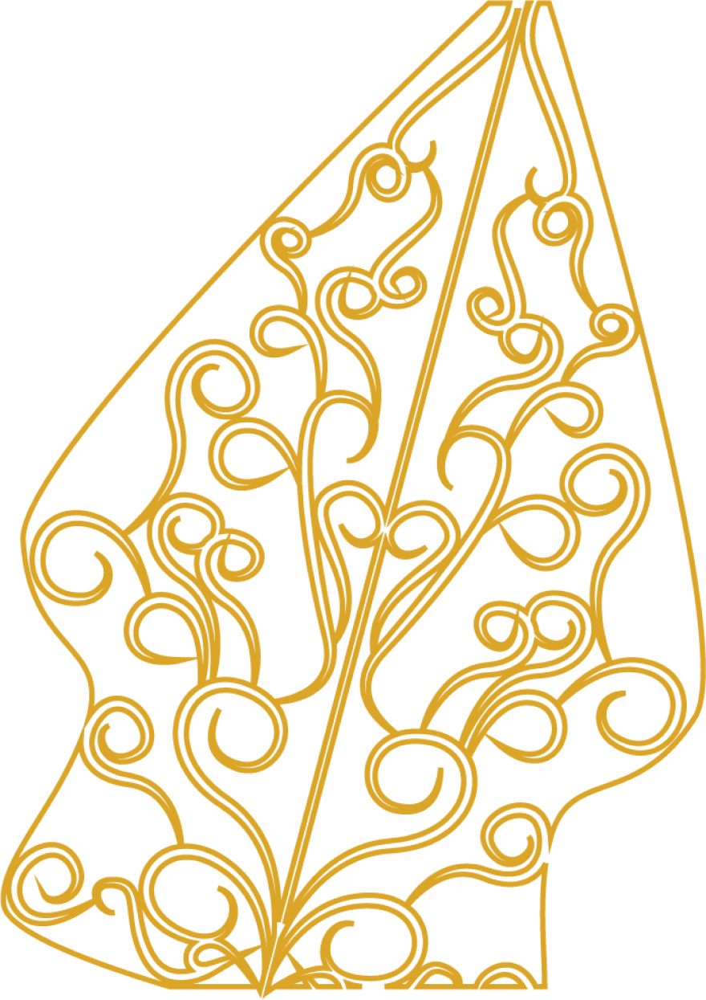
Batik is one of Indonesia's most
valuable cultural heritages.
The motif on this dress is indeed
very beautiful.
01
Batik Ceplokan
Batik ceplokan merupakan jenis batik yang memiliki pola
atau motif dengan bentuk dasar geometri, seperti persegi,
oval maupun bintang yang disusun melingkar sehingga menyerupai
sekuntum bunga dengan pola simetris.
02
Batik Mega Mendung
Batik Megamendung merupakan karya seni batik identik yang menjadi
ikon batik daerah Cirebon. Bahkan Departemen Kebudayaan mendaftarkan
motif megamendung sebagai salah satu warisan dunia.
03
Batik Garutan
Garutan sendiri merupakan nama kain batik yang terkenal di Provinsi
Jawa Barat, khususnya Kabupaten Garut. Yang menarik dari jenis motif
penuh warna tersebut terdapatnya makna alam yang tersirat di dalam
setiap guratnya.
04
Batik Gentongan
Batik Gentongan diartikan sebagai selembar kain batik yang
memiliki motif dengan teknik gentongan. Motif gentongan
menampilkan bentuk abstrak sederhana, tanaman atau kombinasi
keduanya dengan warna terang.
05
Batik Kawung
Batik Kawung adalah motif batik yang bentuknya berupa
bulatan mirip buah kawung yang ditata rapi secara geometris.
Kadang, motif ini juga ditafsirkan sebagai gambar bunga lotus
06
Batik Keraton
Batik keraton merupakan awal mula dari semua jenis batik yang
berkembang di Indonesia. Motifnya mengandung beragam makna filosofi
hidup yang banyak terilhami dari kebudayan Hindu-Jawa.
Jawa is an island that is
famous for its rich traditional
musical instruments. One of them is
gamelan.
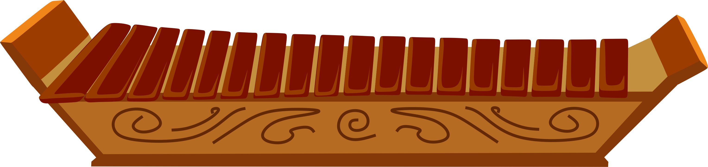
Gambang
Gambang merupakan alat musik tradisional asal Jawa Tengah. Gambang adalah alat musik tradisional
yang terdiri dari 18 bilah bambu yang dimainkan dengan cara dipukul.
Go to shop
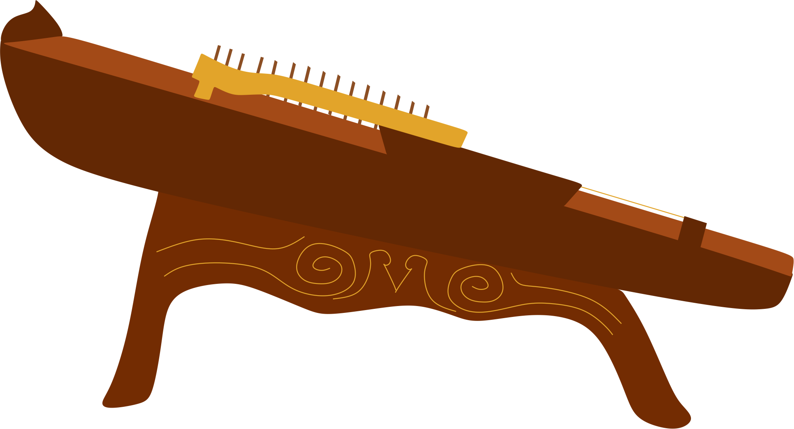
Siter
Siter adalah alat musik petik yang berdawai (bersenar), bentuknya menyerupai cerempung atau kecapi.
Siter memiliki 13 pasang senar
Go to shop
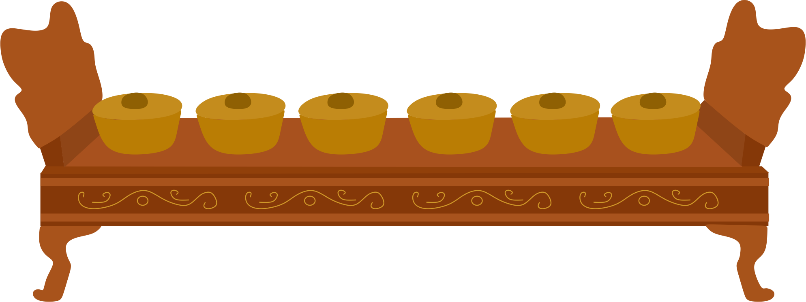
Bonang
Bonang terbuat dari logam dengan bentuk menonjol di bagian atas yang biasa disebut 'pencu atau pencon'.
Cara memainkannya adalah ditabuh atau dipukul bagian atasnya.
Go to shop
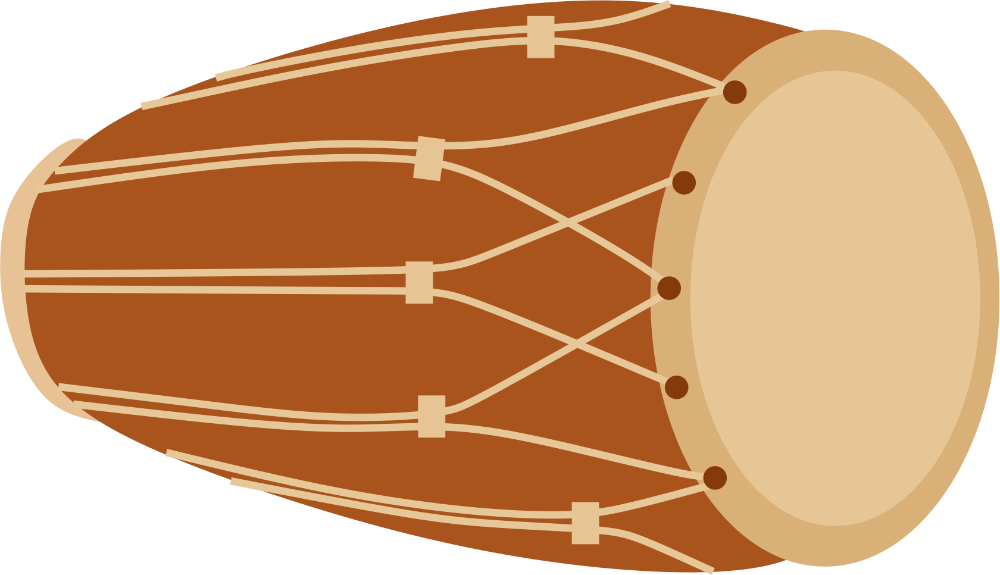
Kendhang
Kendhang adalah instrumen dalam gamelan yang salah satu fungsi utamanya mengatur irama. Instrument ini
dibunyikan dengan tangan, tanpa alat bantu.
Go to shop
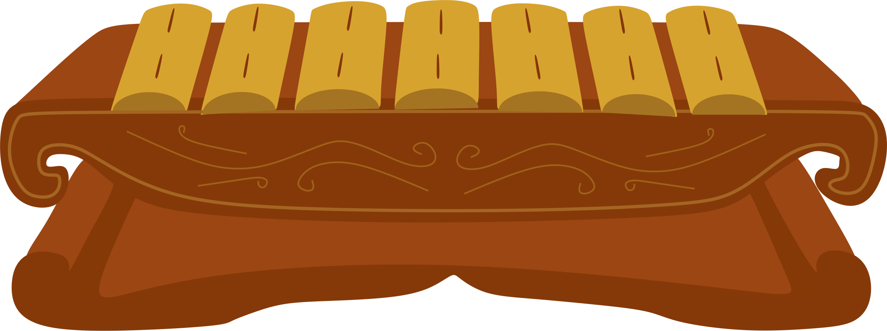
Saron
Saron atau ricik adalah instrumen gamelan keluarga balungan.
Saron terbuat dari perunggu dan memainkannya dengan cara dipukul menggunakan palu.
Go to shop
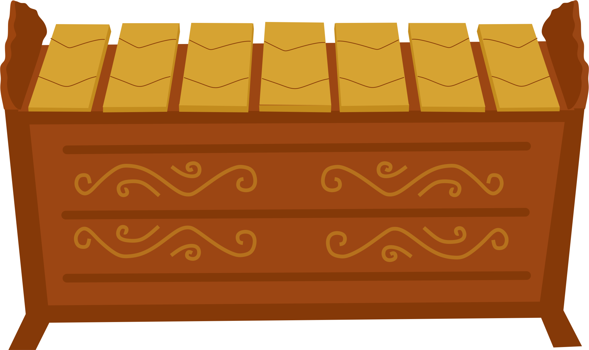
Gender
Gender adalah alat musik yang memiliki 10-14 bilah logam bernada,
dan dimainkan dengan diketuk dengan pemukul dari kayu yang dilapis kain.
Go to shop
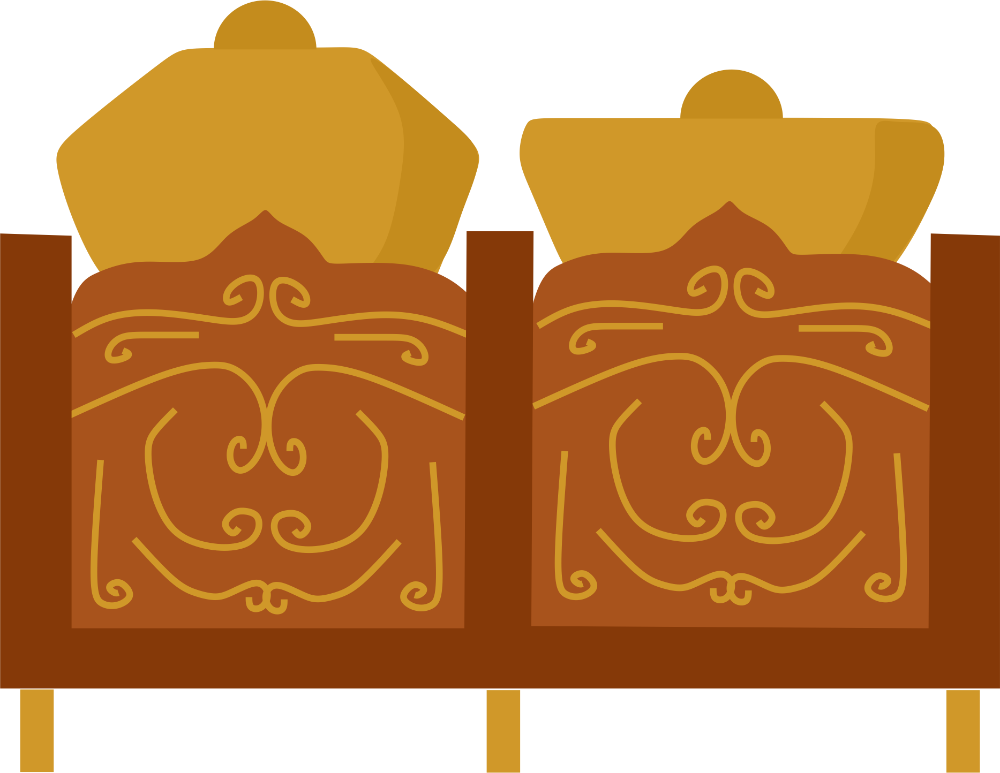
Kenong
Kenong merupakan alat musik yang dimainkan dengan dipukul alat pemukul.
Kenong berfungsi sebagai penentu batas-batas gatra, menegaskan irama.
Go to shop
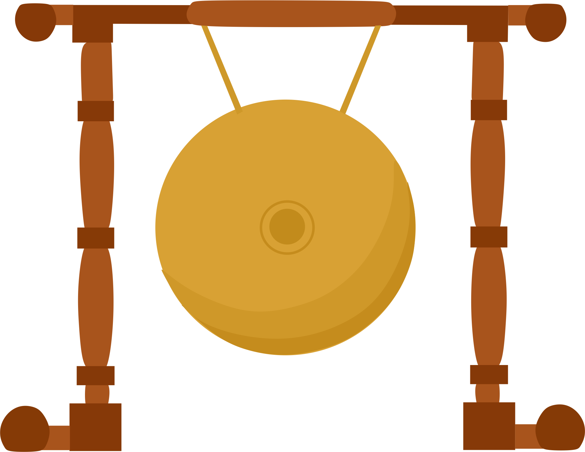
Gong
Gong merupakan alat musik pukul yang terkenal di Asia.
Nada gong terbentuk setelah dibilas dan dibersihkan. Penyesuaian nada gong dengan dikerok.
Go to shop
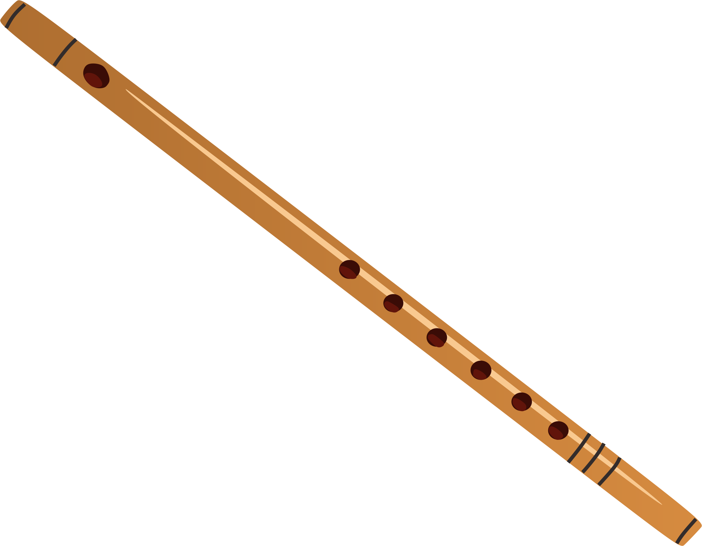
Suling
Suling merupakan alat musik tiup dilakukan dengan menutup lubang.
Suling tradisional biasanya dari bambu, bahan lainnya untuk membuat suling modern.
Go to shop
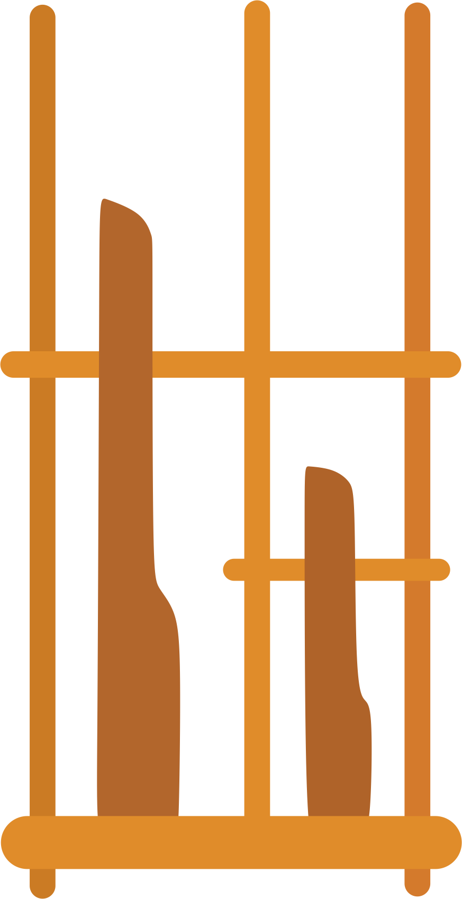
Angklung
Angklung adalah alat musik yang terbuat dari bambu, dibunyikan dengan cara digoyang
sehingga menghasilkan bunyi yang bergetar dalam susunan nada.
Go to shop
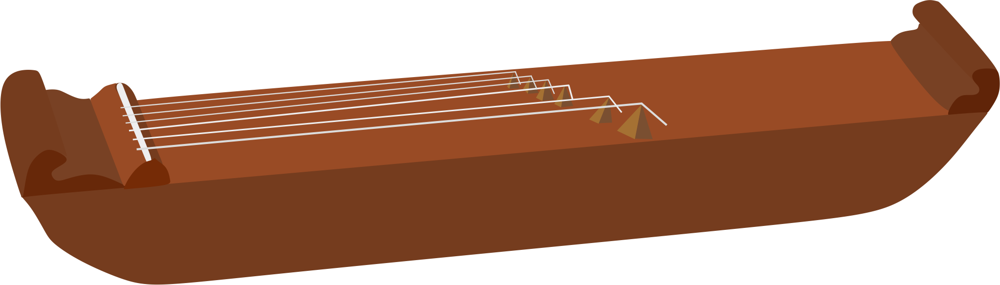
Kecapi
Kecapi adalah sebuah alat musik dawai yang dipetik dengan leher dan punggung
dalam, biasanya dengan lubang suara atau lubang di badan.
Go to shop
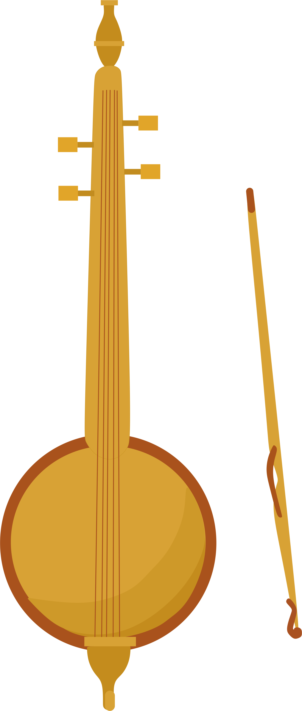
Rebab
Rebab adalah alat musik gesek dari bahan dasar kayu dan batok kelapa yang memiliki dua buah dawai. Di Indonesia, rebab dikenal sebagai ansambel tradisional dalam karawitan.
Go to shop